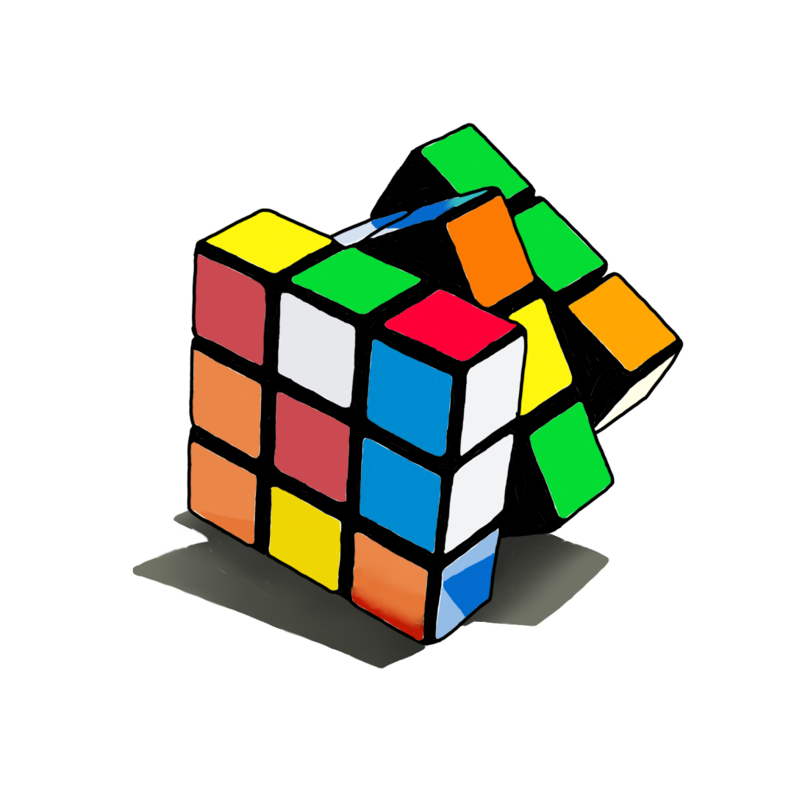

02 – THE MATH BEHIND THE MADNESS
MEET THE PIECES
Before we get into the really interesting facts, let's look at the different pieces of a cube.
It looks like 27 little cubes. It isn't.
A Rubik's Cube is actually made up of 26 visible pieces, and each one has a specific job.

So where's the 27th cube?
There isn't one.
The piece in the middle is basically the cube's core holding everything together.
Why does this matter you ask? In the further sections, when we look at how to solve a cube,
it is important to have this basic knowledge about the pieces.

HOW MANY SCRAMBLES ARE POSSIBLE?⭐
Let's say you get bored and decide to scramble your cube.
How many different scrambles can you make?
43,252,003,274,489,856,000
That's about 43 quintillion possible combinations!
For comparison, that's more than the number of seconds humanity has existed.
How do you even get a number that big?
Remember those 26 pieces we met earlier?
Each corner and edge can move around and in some cases, change orientation.
8 corners can be arranged in 8! ways
Each corner can be oriented in 3 ways → 3⁷
12 edges can be arranged in 12! ways
Each edge can be flipped in 2 ways → 2¹¹
Put all of that together and account for one important restriction
(not every mathematically imaginable arrangement is actually possible)
and you get 8! × 3⁷ × 12! × 2¹¹ / 2 ≈ 43 quintillion.
CAN YOU SOLVE A CUBE WITH TWISTED CORNERS?
Twist just one corner of a Rubik's Cube, and you've created a position that is impossible to solve using normal moves.
This is because not every arrangement is possible.
I'm sure most of you know this by now, considering how often non-cubers have handed me a scramble with a twisted corner
and assumed that I wouldn't be able to solve it.
But, here's the interesting part.
What if you twist more than one corner?
Did you know that it might be possible to solve it in that case.
Yes, it all depends upon how you twist it, meaning in some cases it can still be solved, while in others it can't.
But one thing is certain:
A single twisted corner? 100% unsolvable.
Unless, of course, you twist it back to undo the move.
WHAT IS GOD'S NUMBER?🌌
What's the fewest number of moves it could possibly take to solve ANY scramble?
Not your scramble. Not an easy scramble. The worst possible scramble.
20 MOVES.
In 2010, mathematicians proved that every possible position of a standard 3×3 Rubik's Cube
can be solved in 20 moves or fewer, assuming the usual definition of a move.
This number is known as God's Number.
So somewhere out there is a cube position that looks absolutely destroyed...
and mathematically, 20 moves is enough to solve it.